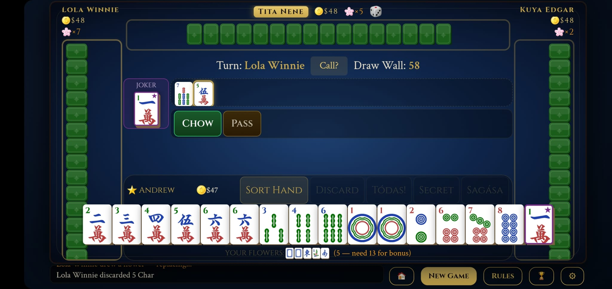
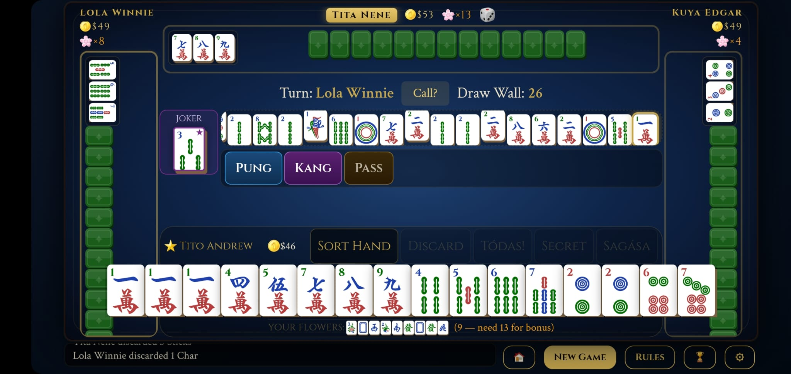
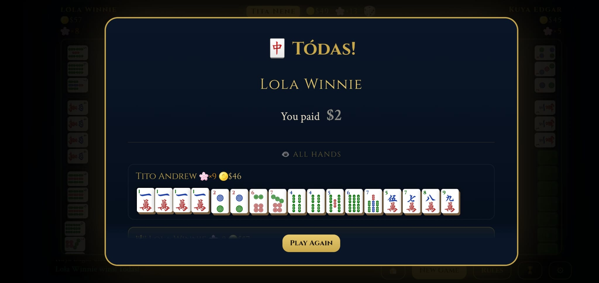
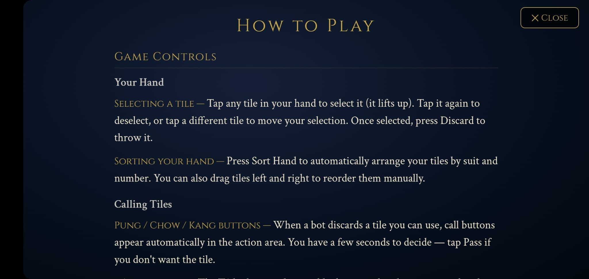

If you're Pinoy, you know the sound. Tiles clacking on a folding table. Tito laughing too loud. Tita asking who shuffled wrong. Someone yelling "Bisaklat!" and the whole room losing it.
That's the mahjong I grew up watching. Jokers. Sagása. Sietepares. Tódas. The 17-tile version we actually play. Every other mahjong app played it the international way — beautiful games, but not ours. So I built one that does it right.
Filipino Mahjong: Joker Rules is the version Lola taught Tita who taught me — the first authentic Filipino mahjong app on the Google Play Store. Sit down with Lola Winnie, Tita Nene, and Kuya Edgar and climb a 7-tier Filipino rank ladder from Baguhan to Hari ng Mahjong. Free, no sign-up, no paywall. Built by one Fil-Am developer because the game my pamilya plays deserved a proper app.
Wildcards that substitute for any suit — the signature mechanic missing from international mahjong apps.
Winning on the very first draw before any discard. The rarest, highest-paid hand in Filipino mahjong.
Completing your pung off another player's discard for an instant payout.
Seven pairs win — the high-risk, high-reward path for ambitious players.
The full clean win. Both elegant and lucrative — a signature Filipino mahjong climax.
The authentic Filipino variant — four more tiles than the 13-tile international version, changing the entire game flow.



